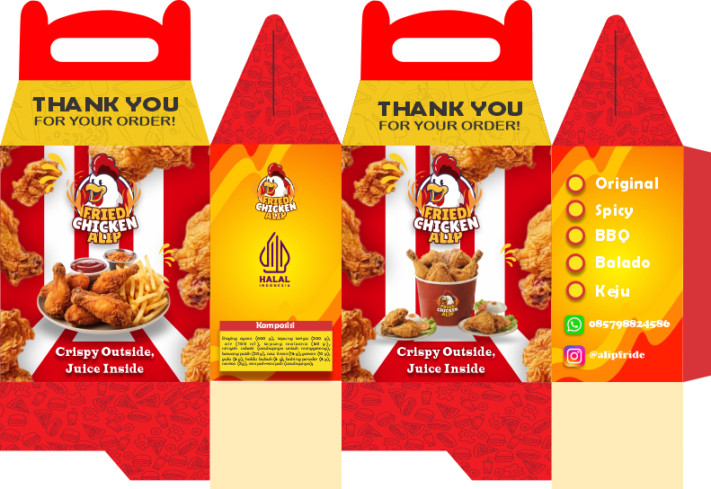
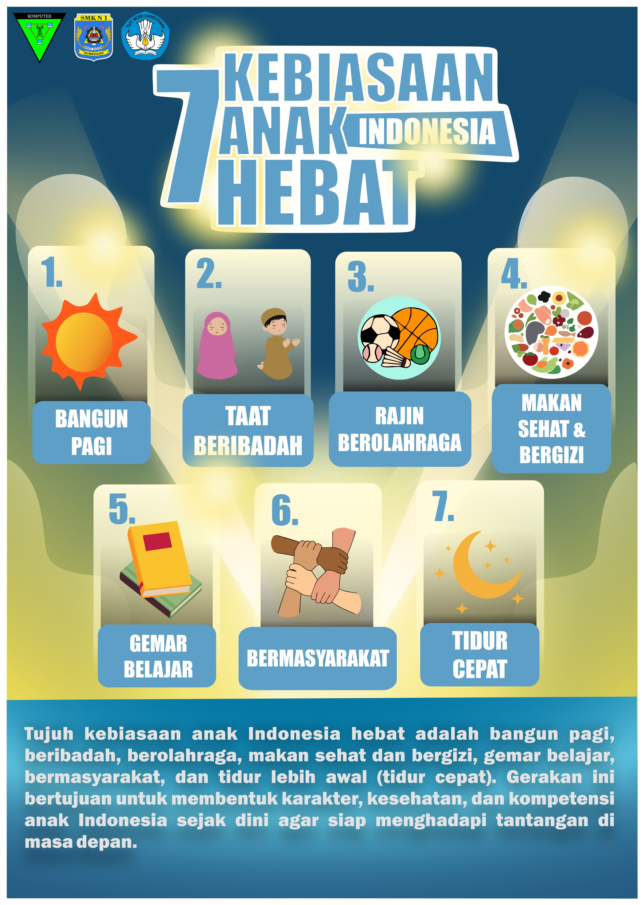
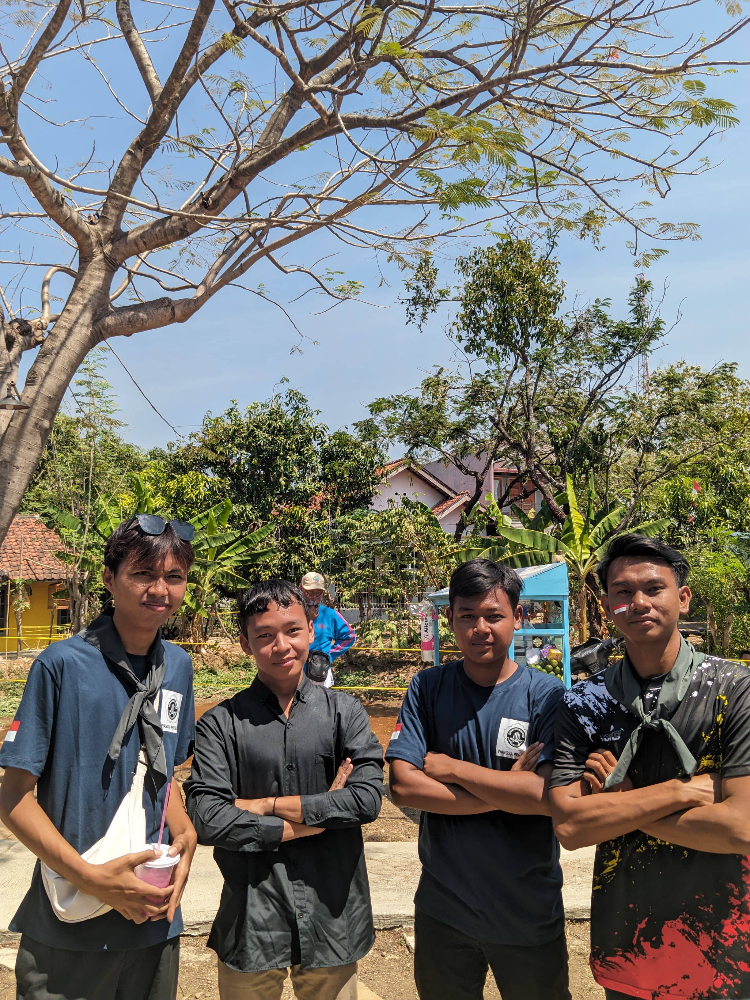

Halo, Saya Alif Nur Rohman
Saya adalah seorang pelajar yang tertarik dalam dunia desain dan dalam dunia pengeditan.
Saya adalah seorang pelajar yang tertarik dalam dunia desain dan dalam dunia pengeditan.
Perkenalkan, nama saya Alif Nur Rohman, saya lahir di Sumedang pada tanggal 4 Mei 2009. Saat ini saya merupakan seorang pelajar di SMKN 1 Sumedang dengan jurusan Rekayasa Perangkat Lunak (RPL).
Saya memiliki minat yang besar di bidang kreatif dan teknologi, khususnya sebagai editor, desainer, dan fotografer. Dalam keseharian, saya sering mengasah kemampuan dengan membuat berbagai karya visual seperti desain grafis, editing foto maupun video, serta eksplorasi teknik fotografi. Bagi saya, kreativitas adalah cara untuk mengekspresikan ide dan menyampaikan pesan secara menarik.
Selain itu, saya juga memiliki hobi di bidang olahraga, yang membantu saya menjaga kesehatan, meningkatkan fokus, serta melatih kedisiplinan dalam menjalani aktivitas sehari-hari.
Sebagai siswa RPL, saya juga terus belajar dan mengembangkan kemampuan di bidang teknologi, seperti pembuatan website dan pemrograman. Saya memiliki semangat untuk terus berkembang, belajar hal baru, dan menciptakan karya yang bermanfaat serta inovatif.
Saya percaya bahwa dengan kombinasi antara kreativitas dan kemampuan teknologi, saya dapat memberikan hasil terbaik dalam setiap karya yang saya buat.



Saya pernah menjadi panitia dalam acara perayaan 17 Agustus dan bertanggung jawab dalam bidang desain serta dokumentasi kegiatan. Dalam acara tersebut, saya membuat berbagai kebutuhan desain seperti poster, kupon, banner, dan media lainnya agar acara terlihat lebih menarik, rapi, dan lebih profesional. Saya juga ikut membantu menyesuaikan desain dengan tema acara sehingga dapat menarik perhatian peserta dan masyarakat sekitar.
Selain bertugas di bidang desain, saya juga dipercaya menjadi fotografer dan videografer selama acara berlangsung. Saya mendokumentasikan berbagai kegiatan dan perlombaan, mulai dari persiapan acara, jalannya perlombaan, hingga momen pembagian hadiah. Dari pengalaman ini, saya belajar meningkatkan kemampuan desain, fotografi, videografi, komunikasi, kreativitas, serta kerja sama dalam tim dan tanggung jawab dalam menyelesaikan tugas dengan baik.